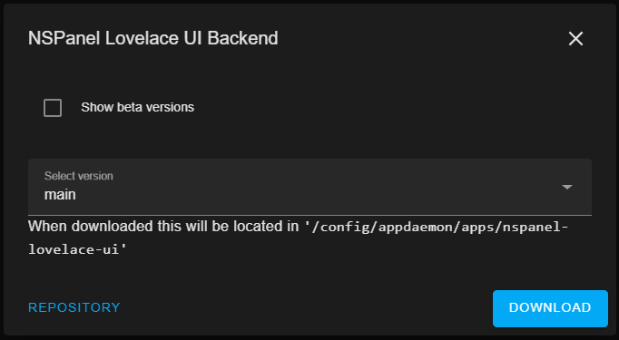

FAQ - Frequently Asked Questions¶
Waiting for content - This is taking longer than usual on the screen¶
You have most likely an error in your MQTT configuration somewhere. To find the error follow theese steps:
-
Check your appdaemon log. (Settings > Add-ons > AppDaemon > Log) You should see something like this:
INFO MQTT: MQTT Plugin initialization completeIf you are seeing Messages like this:CRITICAL MQTT: Could not complete MQTT Plugin initialization, for Connection was refused due to Not AuthorisedYour appdaemon mqtt config is wrong, check your appdaemon.yaml. The log of your mqtt broker might give you additional information. -
Check MQTT Configuration of Tasmota. Your Tasmota device needs to connect sucessfully to your MQTT Broker, if you are in the waiting for content screen, the panel will send periodic messages to it's mqtt topic.
-
Make sure that you are using the same topic in apps.yaml and in your tasmota configuration. The examples in the docs (MQTT Config) are an valid (tasmota<>apps.yaml). Please don't modify the Full Topic in your Tasmota Config, unless you know the implications, changing the Full Topic will result in diffent Send and Receive Channels, that have to be correct in your apps.yaml.
-
If you are still in the waiting for content screen please share the following items:
- a screenshot of your tasmota mqtt configration (please censor your mqtt password)
- your appdaemon.yaml (please censor your mqtt password)
- your apps.yaml
- the appdaemon log, after restarting the container
How to update¶
Update AppDaemon Script¶
HACS will show you that there is an update avalible and ask you to update. It is important to restart the AppDaemon Container afterwards.
Update Display Firmware¶
You should get an notification on the screen, asking you to update the firmware. In case you want to update manually you can use the following commands.
EU Version: FlashNextion http://nspanel.pky.eu/lui-release.tft
US Version Portrait: FlashNextion http://nspanel.pky.eu/lui-us-p-release.tft
US Version Landscape: FlashNextion http://nspanel.pky.eu/lui-us-l-release.tft
Update Tasmota Berry Driver¶
You should get an notification on the screen, asking you to update the driver, if an update is needed.
You can update the berry driver directly from the Tasmota Console with the following command.
UpdateDriverVersion https://raw.githubusercontent.com/joBr99/nspanel-lovelace-ui/main/tasmota/autoexec.be
How to upgrade from a release to the current development version¶
- Update App in HACS to main
Click redownload in the menu of the app in HACS.
Select main version.
!!! Wait for it to load, dropdown needs to be selectable again, otherwise it will download the latest release !!!

!!! Wait for it to load, dropdown needs to be selectable again, otherwise it will download the latest release !!!
Click download.
-
Restart AppDaemon
-
Flash current Development Firmware in Tasmota Console. DO NOT USE THIS VERSION/URLS IF YOUR ARE NOT ON THE DEVELOPMENT VERSION
EU VERSION: FlashNextion http://nspanel.pky.eu/lui.tft
Development happens in the EU version, so it is possible that the US Version isn't up to date with the current development version of the EU firmware, the lastet US versions are still downloadable with the following links:
US LANDSCAPE: FlashNextion http://nspanel.pky.eu/lui-us-l.tft
US PORTRAIT: FlashNextion http://nspanel.pky.eu/lui-us-p.tft